En esta lección se explica cómo utilizar algunas de las herramientas de Eclipse for PHP developers (Eclipse PHP).
Actualizar contenido del Explorador de proyectos
El Explorador de proyectos de Eclipse no comprueba continuamente el contenido real de las carpetas, ni siquiera cuando se reinicia Eclipse.
Si creamos una carpeta desde fuera de Eclipse, por ejemplo con el Explorador de archivos de Windows ...
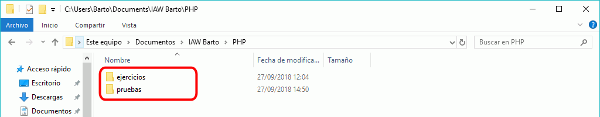
... la nueva carpeta no se muestra en el Explorador de proyectos:
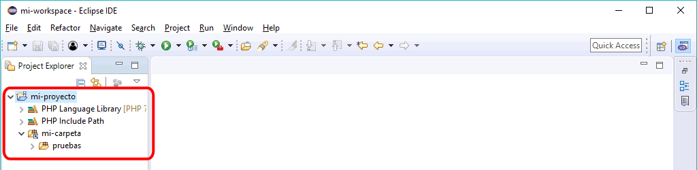
Para forzar a Eclipse a revisar el contenido de las carpetas, seleccione un elemento (en la imagen se ha seleccionado el proyecto, pero se podría haber seleccionado la carpeta enlazada), haga clic derecho y elija la opción Refresh (o pulse F5)
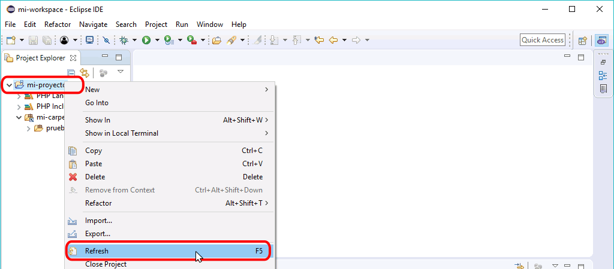
El explorador de proyectos actualizará el contenido y se podrán ver todos los ficheros y carpetas existentes..
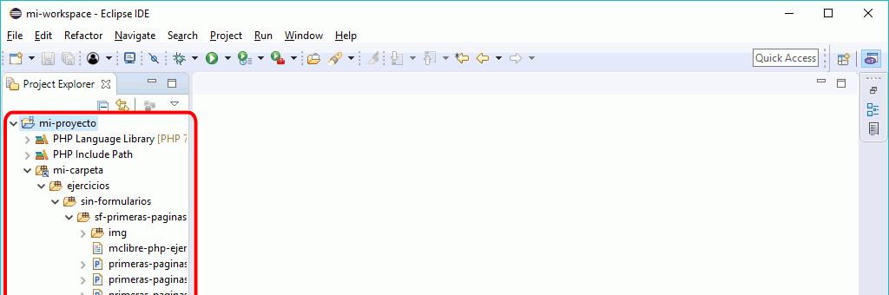
Aplicar estilo PSR-2
Eclipse PHP formatea el código de acuerdo con las recomendaciones de estilo PSR-2.
Se puede formatear todo el programa o solamente una parte (seleccionando la parte a formatear) ...
... mediante el menú Source > Format ...
... y automáticamente el código se formateará de acuerdo con las recomendaciones de estilo PSR-2:
Si no se tiene la costumbre de utilizar el formato PSR-2, se recomienda formatear todos los programas para familiarizarse con el estilo. Con un poco de práctica se interiorizará el estilo y se aplicará espontáneamente.
Pegar código HTML en archivo PHP
Al pegar código HTML copiado del navegador en un archivo PHP, hay que tener cuidado para no perder el sangrado del código HTML original:
Si el código se pega fuera de un fragmento PHP, el sangrado se conserva:
Si el código se pega directamente en un fragmento PHP, el sangrado se pierde:
Pero si el código se pega en una instrucción print, el sangrado se conserva (los errores que se muestran en la imagen siguiente son debidos a las comillas que forman parte del código fuente HTML):
Buscar y sustituir en archivo
Para buscar y sustituir en un único archivo, abra el menú Edit > Find/Replace (o mediante el atajo Ctrl+F).
Ejemplo: Sustituir las comillas en el código HTML pegado
Al pegar código HTML en un print, las comillas incluidas en el código HTML pegado provocan errores de sintaxis que se deben corregir cambiando las comillas dobles por el carácter especial \".
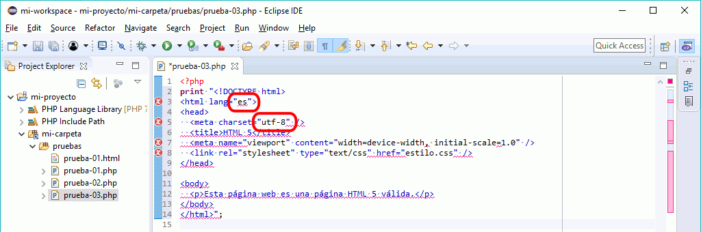
La forma más rápida de cambiarlas consiste en seleccionar las líneas de código HTML ...
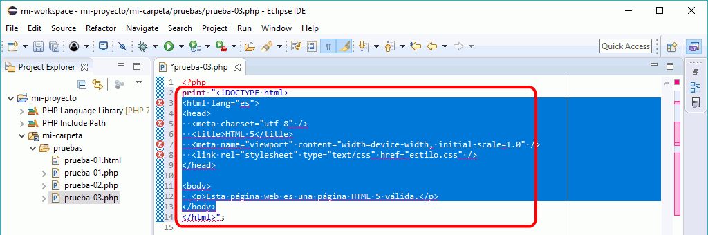
... y abrir el menú Edit > Find/Replace (o mediante el atajo Ctrl+F). En la ventana Find/Replace hay que buscar el carácter " para sustituirlo por el carácter \":
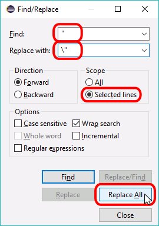
Al hacer clic en el botón "Replace All", se sustituirán las comillas:
Un error bastante habitual es seleccionar más líneas de lo necesario:
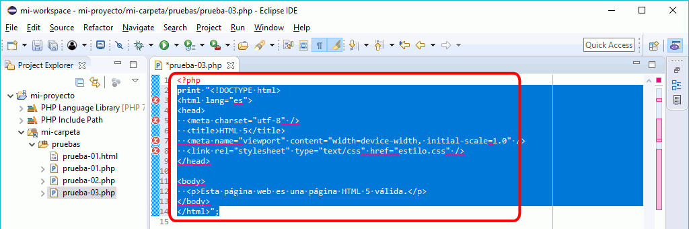
Al buscar y sustitutir las comillas, el problema es que las comillas que delimitan la cadena también se sustituyen, lo que también es un error de sintaxis.
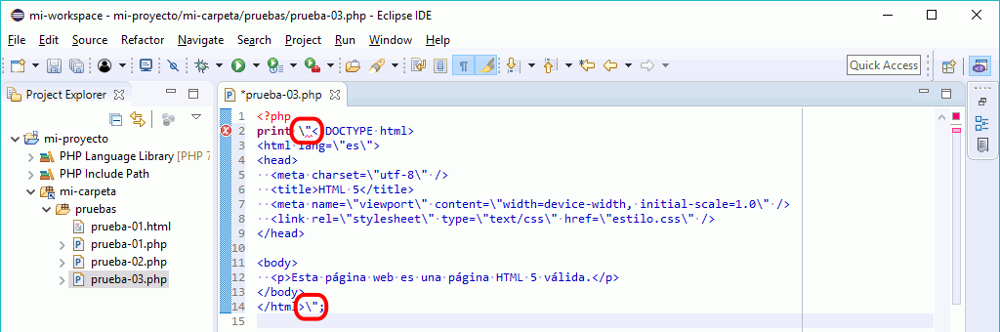
Esas contrabarras sobrantes se pueden borrar manualmente:
Buscar y sustituir en archivos
Para buscar y sustituir en varios archivos, seleccione la carpeta en la que desea realizar la búsqueda y abra el menú Search > File ... (o haga clic derecho y elija la opción Search > Search ..., o utilice el atajo Ctrl+H).
Ejemplo: Establecer el nombre del autor en los ejericios
En las plantillas de los ejercicios aparece uno o varios lugares en los que se aconseja escribir el nombre del autor del programa:
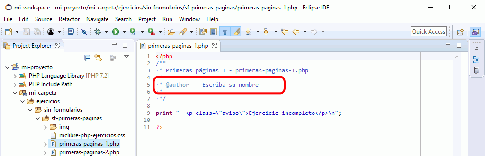
Para hacer el cambio en todos los programas, seleccione la carpeta y abra el menú Search > File ... (o haga clic derecho y elija la opción Search > Search ..., o utilice el atajo Ctrl+H).
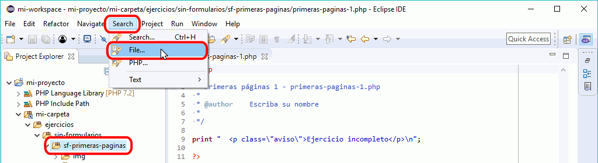
En la ventana Search, escriba la cadena a sustituir en el campo "Containing text" y haga clic en Replace...
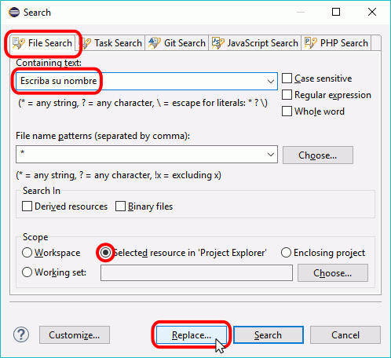
En la ventana "Replace Text Matches" se indicará el número de veces que se ha encontrado la cadena. Escriba el texto de sustitución en el campo "With" y haga clic en OK:
Tras unos segundos, los archivos se habrán modificado
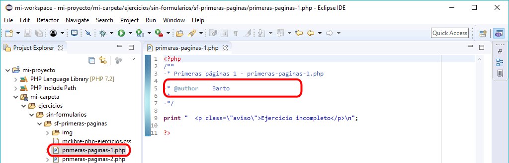
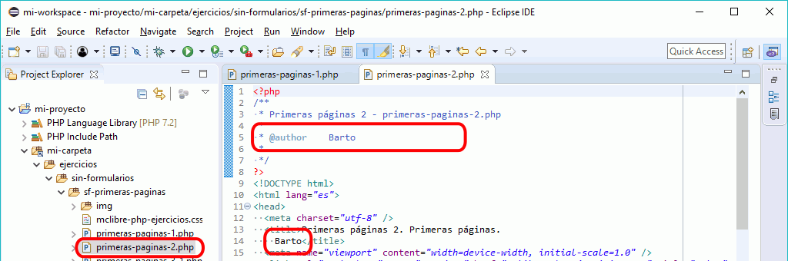
Iconos de error
Eclipse PDT indica con un aspa roja las líneas en las que detecta un error, pero también añade un aspa roja al icono de fichero en el Explorador de proyectos y a todos los iconos de carpetas superiores:
Normalmente, como en la imagen siguiente, las aspas rojas indican errores de sintaxis que imiden la ejecución de las páginas.
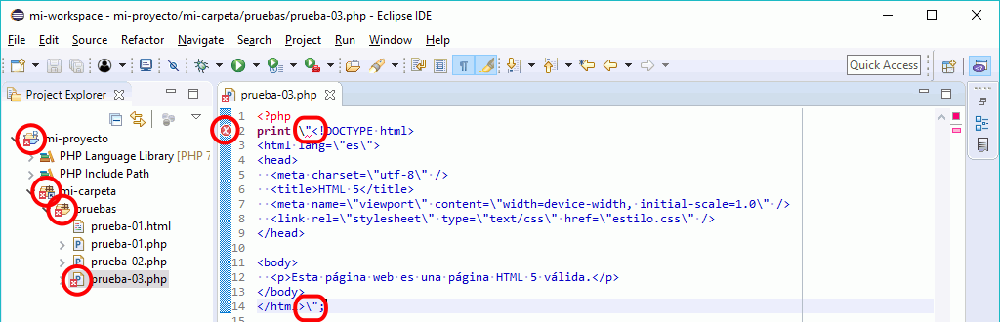
Eclipse PDT indica con un triángulo amarillo las líneas en las que detecta un problema, pero también añade el triángulo al icono de fichero en el Explorador de proyectos y a todos los iconos de carpetas superiores.
A veces los avisos se deben a limitaciones de Eclipse. Por ejemplo, en la imagen siguiente Eclipse identifica como problemas las etiquetas y atributos SVG, cuando son correctos.
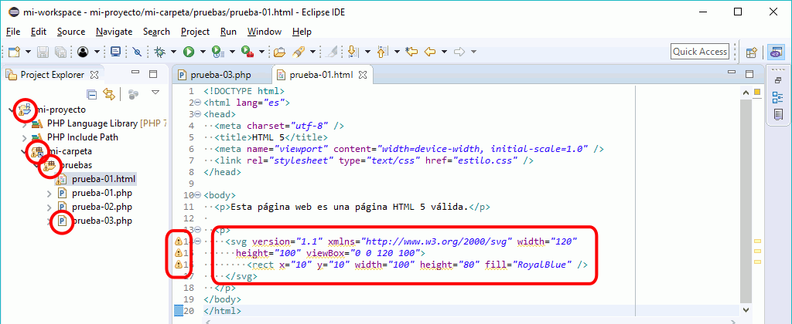
Aumentar o reducir el sangrado
Para aumentar el sangrado de una o varias líneas se puede seleccionar las líneas y ...
teclear el carácter tabulador, o ...
elegir el menú Edit > Shift Right
Para reducir el sangrado de una o varias líneas se puede seleccionar las líneas y ...